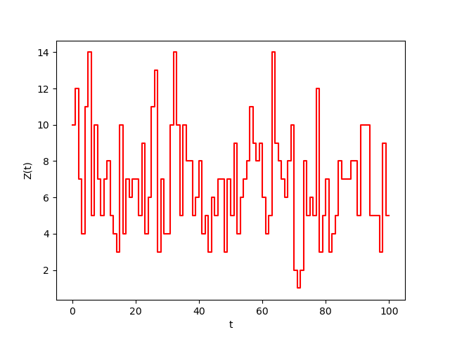

Birth-and-death Processes¶
A birth-and-death process \((Z(t) : t \ge 0)\) is a continuous-time Markov chain evolving on \(\mathcal S = \{0,1,\dots,N\}\), where \(N\) may be infinite, that tracks the number of individuals in a population. The state transitions up by one when an individual is added to the population and transitions down by one when an individual is removed from the population. The evolution of the process is governed by non-negative real valued functions of the current population size \(z\) denoted by \(\lambda_z(\boldsymbol\theta) : \mathcal S \to \mathbb R_+\) and \(\mu_z(\boldsymbol\theta) : \mathcal S \to \mathbb R_+\), which are parametrized by a finite set of real numbers denoted \(\boldsymbol\theta\). When the process is in state \(z\) the time until the process transitions to another state is exponentially distributed with mean \((\lambda_z(\boldsymbol\theta)+\mu_z(\boldsymbol\theta))^{-1}\) (where \(1/0=\infty\)). At a transition time from state \(z\) the process transitions to state \(z+1\) with probability \(\lambda_z(\boldsymbol\theta)/(\lambda_z(\boldsymbol\theta)+\mu_z(\boldsymbol\theta))\) or to state \(z-1\) with probability \(\mu_z(\boldsymbol\theta)/(\lambda_z(\boldsymbol\theta)+\mu_z(\boldsymbol\theta))\). Some popular models, which are included by default in BirDePy, are listed in the table below.
Model |
\(\lambda_z(\boldsymbol\theta)\) |
\(\mu_z(\boldsymbol\theta)\) |
\(\boldsymbol\theta\) |
|---|---|---|---|
Verhulst |
\(\gamma\left(1-\alpha z\right) z\) |
\(\nu\left(1+\beta z\right)z\) |
\(\gamma\), \(\nu\), \(\alpha\), \(\beta\) |
Ricker |
\(\gamma z \exp\left(-(\alpha z)^c \right)\) |
\(\nu z\) |
\(\gamma\), \(\nu\), \(\alpha\), \(c\) |
Hassell |
\(\frac{\gamma z}{(1+\alpha z)^c}\) |
\(\nu z\) |
\(\gamma\), \(\nu\), \(\alpha\), \(c\) |
MS-S |
\(\frac{\gamma z}{1+ \left(\alpha z\right)^c}\) |
\(\nu z\) |
\(\gamma\), \(\nu\), \(\alpha\), \(c\) |
Moran |
\(\frac{N-z}{N}\left(\alpha\frac{z}{N}(1-u) + \beta\frac{N-z}{N}v\right)\) |
\(\frac{z}{N}\left(\beta\frac{N-z}{N}(1-v) +\alpha\frac{z}{N}u\right)\) |
\(\alpha\), \(\beta\), \(u\), \(\nu\), \(N\) |
pure-birth |
\(\gamma z\) |
\(0\) |
\(\gamma\) |
pure-death |
\(0\) |
\(\nu z\) |
\(\nu\) |
Poisson |
\(\gamma\) |
\(0\) |
\(\gamma\) |
linear |
\(\gamma z\) |
\(\nu z\) |
\(\gamma\), \(\nu\) |
linear-migration |
\(\gamma z + \alpha\) |
\(\nu z\) |
\(\gamma\), \(\nu\), \(\alpha\) |
M/M/1 |
\(\gamma\) |
\(\nu I\{z > 0\}\) |
\(\gamma\), \(\nu\) |
M/M/\(\infty\) |
\(\gamma\) |
\(\nu z\) |
\(\gamma\), \(\nu\) |
loss system |
\(\gamma I\{z < c\}\) |
\(\nu z\) |
\(\gamma\), \(\nu\), \(c\) |
Note: \(I\{A\}\) evaluates to 1 when \(A\) is true and otherwise evaluates to 0.
Custom Models¶
It is possible to specify custom birth and death rates for the five core BirDePy functions. This is achieved by specifying the argument of model as ‘custom’ and passing as kwargs the callables b_rate and d_rate. Each of these callables must take as input a population size ‘z’ and a list of parameters ‘p’, and respectively return scalars \(\lambda\) and \(\mu\) corresponding to the birth and death rates: b_rate(z, p) -> \lambda, d_rate(z, p) -> \mu.
As an example we will consider a process with \(\lambda_z(\boldsymbol\theta) = \gamma\) and \(\mu_z(\boldsymbol\theta) = \nu z^2\).
If not already done, first install BirDePy (as described here). Then import BirDePy:
import birdepy as bd
Now specify custom birth and death rates:
def custom_b_rate(z, p): return p[0] * z
def custom_d_rate(z, p): return p[1] * z**2
Suppose that \(\gamma = 5\), \(\nu = 0.5\) and \(Z(0)=10\). To simulate a trajectory:
obs_times = [t for t in range(25)]
pop_sizes = bd.simulate.discrete([5, 0.5], model='custom', z0=10, times=obs_times,
b_rate=custom_b_rate, d_rate=custom_d_rate, seed=2021)
The trajectory can be plotted using Matplotlib:
import matplotlib.pyplot as plt
plt.step(obs_times, pop_sizes, 'r', where='post', color='tab:purple')
plt.ylabel('Z(t)')
plt.xlabel('t')
plt.show()
For example:
The parameters can then be estimated from the simulated sample path:
p_bounds = [[0,10], [0,10]]
est = bd.estimate(obs_times, pop_sizes, [1, 1], p_bounds, model='custom',
b_rate=custom_b_rate, d_rate=custom_d_rate)
print(est.p)
Which displays the estimate:
[7.029076385718105, 0.6961996442136139]